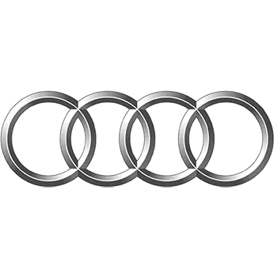
Работы по Audi
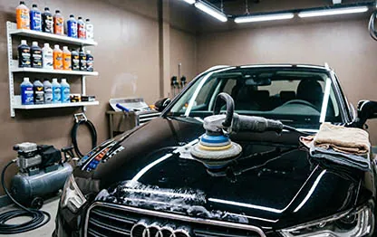
Детейлинг Ауди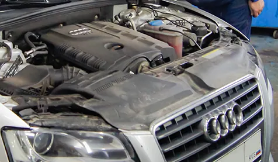
Диагностика дизельного двигателя (ДВС) Audiот 1 500 ₽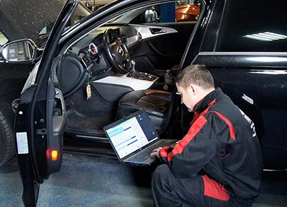
Компьютерная диагностика Аудиот 1 050 ₽ Ремонт АКПП Аудиот 10 000 ₽
Ремонт АКПП Аудиот 10 000 ₽ Ремонт DSG Audiот 35 000 ₽
Ремонт DSG Audiот 35 000 ₽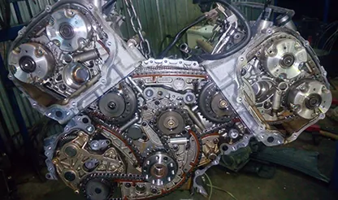
Ремонт двигателя Аудиот 1 500 ₽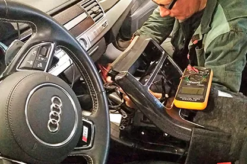
Ремонт электрики Audiот 1 500 ₽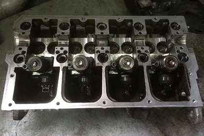
Ремонт ГБЦ Аудиот 3 000 ₽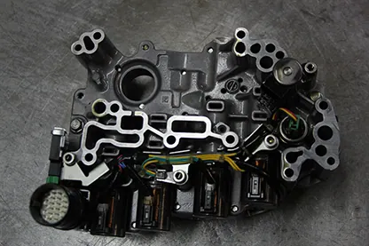
Ремонт гидроблока АКПП Audiот 15 000 ₽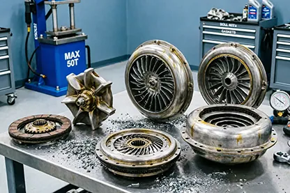
Ремонт гидротрансформатора АКПП Аудиот 4 500 ₽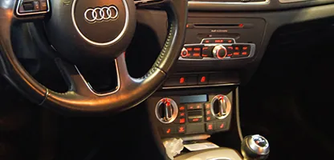
Ремонт кондиционера Audiот 450 ₽ Ремонт МКПП Audi
Ремонт МКПП Audi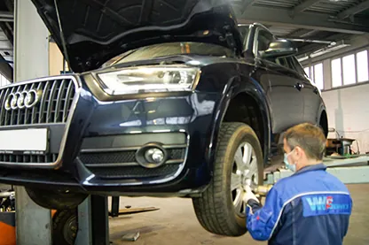
Ремонт подвески Аудиот 360 ₽ Ремонт радиатора кондиционера Audiот 1 500 ₽
Ремонт радиатора кондиционера Audiот 1 500 ₽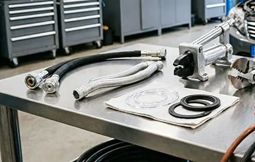
Ремонт шлангов кондиционераот 2 000 ₽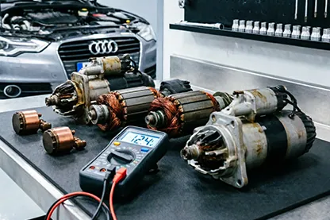
Ремонт стартеров Audiот 3 000 ₽ Ремонт стеклоподъемников Аудиот 1 050 ₽
Ремонт стеклоподъемников Аудиот 1 050 ₽ Диагностика ТНВД и дизельных форсунок Аудиот 1 500 ₽
Диагностика ТНВД и дизельных форсунок Аудиот 1 500 ₽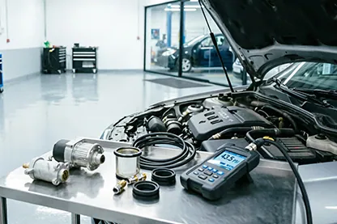
Ремонт топливной системы Audiот 600 ₽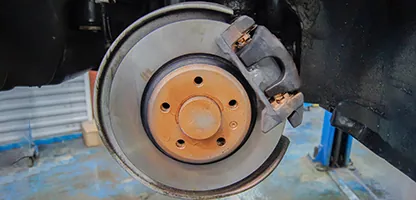
Ремонт тормозной системы Audiот 1 050 ₽ Ремонт трапеции стеклоочистителя Audiот 1 200 ₽
Ремонт трапеции стеклоочистителя Audiот 1 200 ₽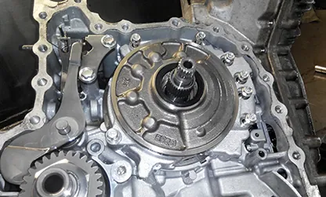
Ремонт вариатора Аудиот 50 000 ₽Установка сигнализации на Ауди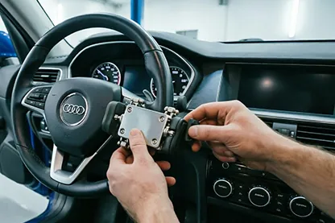
Установка мультилок на Ауди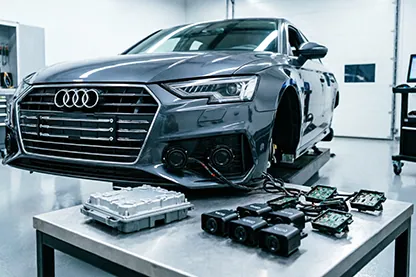
Установка парктроника на АудиУстановка техноблока на Ауди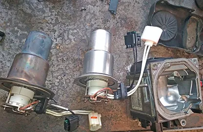
Установка Webasto на Audiот 9 000 ₽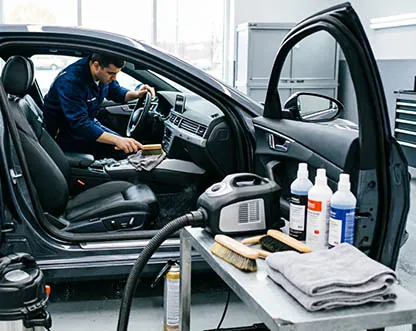
Химчистка салона Audi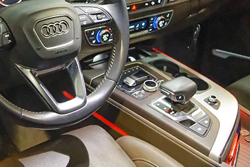
Замена масла АКПП Audiот 1 500 ₽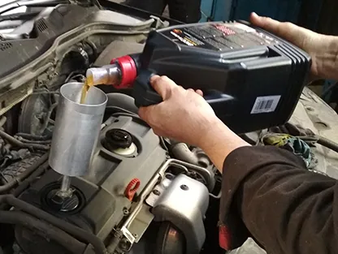
Замена масла в двигателе Audiот 750 ₽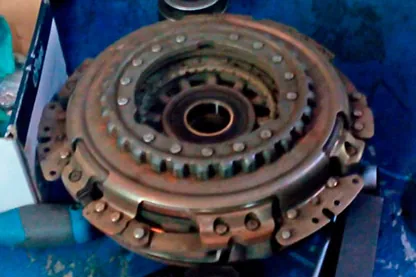
Замена сцепления DSG на Аудиот 17 500 ₽ Замена ГРМ Аудиот 3 950 ₽
Замена ГРМ Аудиот 3 950 ₽Автосервис VWS приглашает владельцев автомобилей Ауди воспользоваться услугами по техническому обслуживанию и ремонту Audi в Москве. На сегодняшний день наш сервисный центр может производить работы по диагностике и ремонту автомобилей этого немецкого концерна на самом высоком уровне, благодаря современному оборудованию и квалификации наших сотрудников. На основе данных компьютерных систем диагностики Ауди специалисты дадут необходимые рекомендации по ремонту, обслуживанию и эксплуатации автомобиля.
Для замены неисправных узлов, технического обслуживания используются только оригинальные или рекомендованные производителем запасные части, расходные материалы.
На все работы наш техцентр предоставляет гарантию.
Цены на обслуживание и ремонт Ауди
| Наименование услуги | Цена, руб. |
|---|---|
| Ведомый поиск неисправностей | По запросу |
| Диагностика подвески | По запросу / Бесплатно |
| Техническое обслуживание | По запросу |
| Замена воздушного фильтра двигателя | По запросу |
| Замена салонного фильтра | По запросу |
| Замена топливного фильтра (проходной) | По запросу |
| Замена передних тормозных колодок (включая чистку тормозных механизмов) | По запросу |
| Замена задних тормозных колодок | По запросу |
| Замена передних тормозных дисков | По запросу |
| Замена задних тормозных дисков | По запросу |
| Замена втулок стабилизатора (все на одной оси) перед | По запросу |
| Замена стоек стабилизатора (все на одной оси) | По запросу |
| Замена тормозной жидкости | По запросу |
| Замена свечей зажигания двигатель | По запросу |
| Замена цепи ГРМ (включая замену приводного ремня) | По запросу |
| Замена ремня ГРМ (включая замену всех роликов, вод. насоса) | По запросу |
| Замена ремня ГРМ Дизель (включая замену всех роликов, вод. насоса, опрессовку системы охлаждения) | По запросу |
| Сход-развал колес автомобиля | По запросу |
| Чистка инжектора | По запросу |
| Замена масла ДВС и фильтра | По запросу |
| Замена охлаждающей жидкости | По запросу |
| Замена жидкости гидроусилителя руля | По запросу |
| Заправка кондиционера (диагностика) | По запросу |
| Замена аккумуляторной батареи (без ЭСУД) | По запросу |
| Замена аккумуляторной батареи (ЭСУД) | По запросу |
* Цены на некоторые ремонтные работы Ауди могут варьироваться в зависимости от модели, комплектации и двигателя автомобиля. Точную стоимость услуг можно узнать по телефону техцентра +7 (495) 632-01-20, либо в разделе " Вопрос-Ответ".
Мастерские по ремонту Ауди
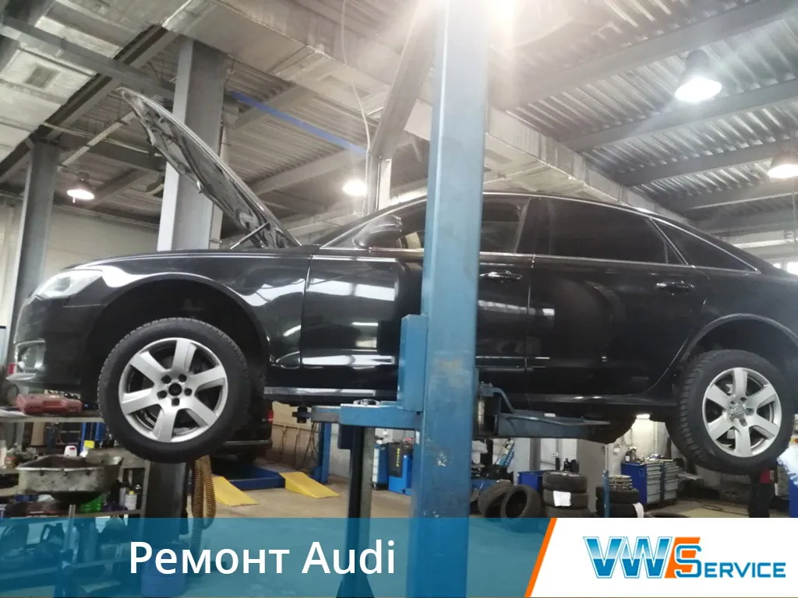
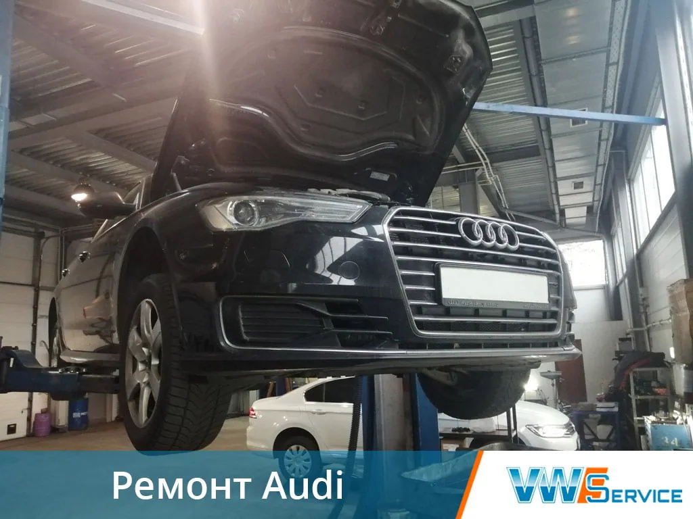
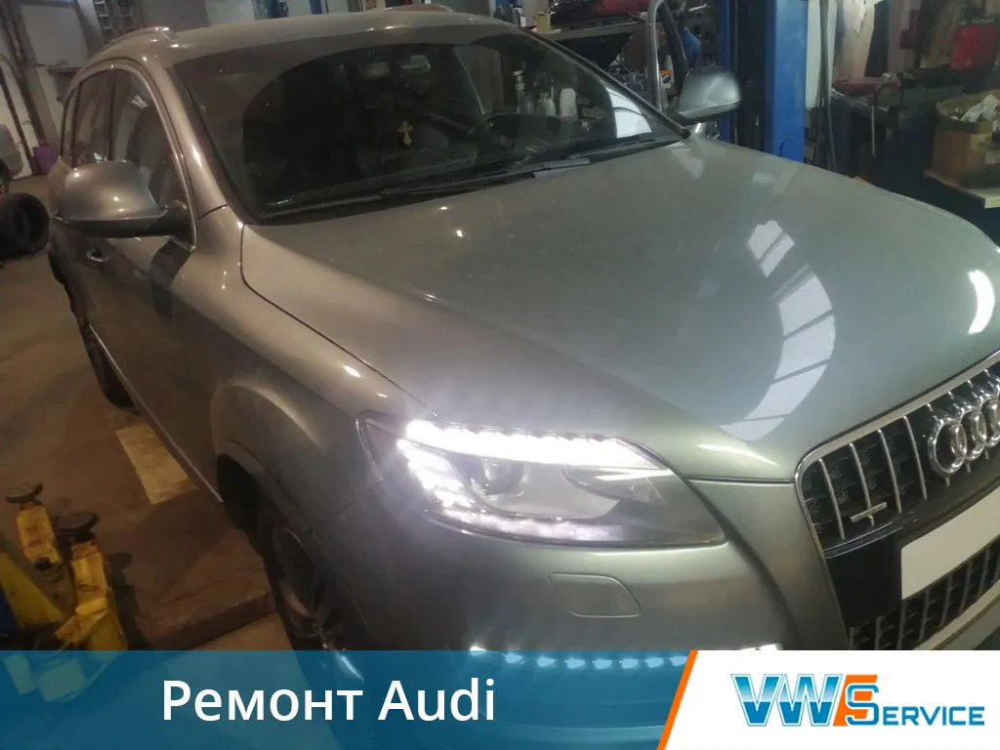
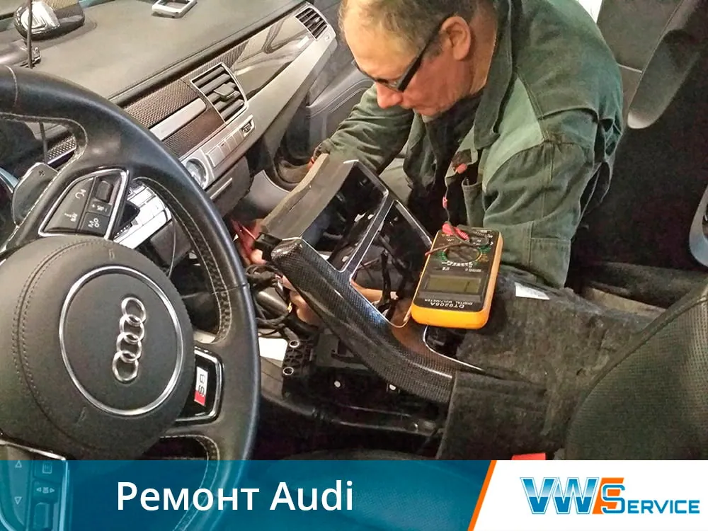
Выберите услугу
Слесарный ремонт ТО
Ремонт двигателя (ДВС)Ремонт ГБЦЗамена масла в двигателеЗамена цепи ГРМРемонт подвескиРемонт тормозной системыДизельная аппаратура
ТНВД, насос форсункиДиагностика дизельного двигателяРемонт трансмиссий DSG АКПП МКПП
Ремонт DSGЗамена сцепления DSGЗамена масла в АКППРемонт гидротрансформатора АКППРемонт гидроблока АКППРемонт АКППРемонт МКППРемонт вариаторовЭлектрооборудование
Компьютерная диагностикаРемонт топливной системыРемонт стартераРемонт электрикиРемонт стеклоподъемниковРемонт трапеции стеклоочистителяАвтономные отопители, автокондиционеры, аргон
Установка WebastoРемонт кондиционераРемонт радиатора кондиционераРемонт шлангов кондиционераУстановка оборудования
Установка парктроникаУстановка автосигнализацииУстановка техноблокаУстановка мультилокУход за автомобилем
Химчистка салонаДетейлингТолько у нас в сервисе!
Ремонт Ауди Оптимальные сроки,
Высокое качество, Конкурентные цены
Записаться на обслуживание
Отзывы клиентов
Огромная благодарность сотрудникам сервиса! Не в первый раз помогают моему автомобилю, всегда оперативно можно попасть на ремонт или диагностику, и цены вполне адекватные! Желаю Вам успехов и процветания в новом году!
Александр
Модель авто: Audi A4
06.01.2021
Хочу сказать спасибо сотрудникам автосервиса VWS. Я ехала по работе в области и у меня сломался автомобиль – заводила и тут же глох. Позвонила в компанию, дождалась эвакуатора, который отвез машину в техцентр в Москве, где в течении дня нашли поломку. Нужные запчасти для Ауди были на складе, поэтому быстро починили и вечером я уже уехала домой.
Виктория
Модель авто: Audi Q3
05.07.2020
Спасибо большое, недавно починил у вас машину. Быстро и качественно.
Рамиль
Модель авто: Ауди тт
09.07.2019
Правильный сервис, после неудачного опыта в своем сервисе сосед посоветовал VWS. Заехал, сделали быстро и качественно, можно присутствовать в ремонтной зоне, можно отдохнуть в комнате отдыха. Чай, кофе, телек ) Запчасти были в наличии. Спасибо !
Константин
Модель авто: AUDI
22.03.2017
Вчера приехал с проблемой пуска дизеля на холодную после замены ГРМ в сервисе на Кавказском бульваре. Мастер Алексей доброжелательно и быстро организовал диагностику, нашли ошибку в работе предыдущей мастерской. Спасибо дизелисту Роману за исправление их косяка. Теперь заводится, как говорится, с пол-оборота, несмотря на почтенный возраст (2001 г.в. и 190 тыс. км пробег). Цена работы вполне приемлемая и понятная даже для меня, пенсионера. Теперь - только сюда. Пользуясь случаем, поздравляю весь коллектив мастерской с Майскими праздниками.
Александр
Модель авто: Audi 4 (1,9 TDI)
01.05.2015
Контакты
- г. Москва, 1-й Дорожный проезд, д. 5АЮАО Москвы. Ближайшее метро — «Южная»
- Ежедневно с 8:30 до 20:30Без выходных. Приём автомобилей — круглосуточно
- +7 (495) 260-06-02Эвакуатор: +7 (495) 796-29-99